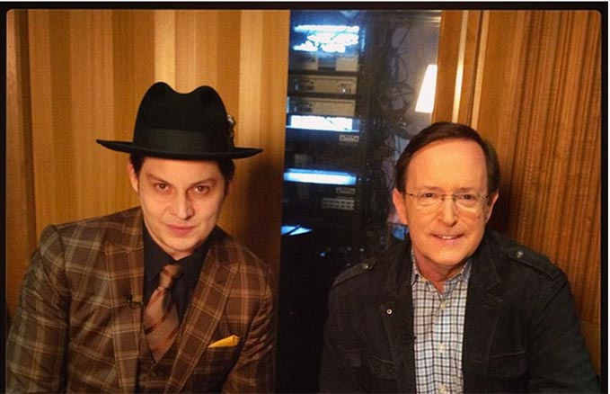

In case you missed it, watch Jack’s interview with Anthony Mason about The Rise and Fall of Paramount Records, Volume 2 on CBS This Morning below.
Tune in to VH1 tomorrow night, November 27th, at 9pm ET/PT to watch “A Very Bonnaroo Thanksgiving” featuring clips of Jack’s epic 2014 headline set and The White Stripes’ 2007 performance.
